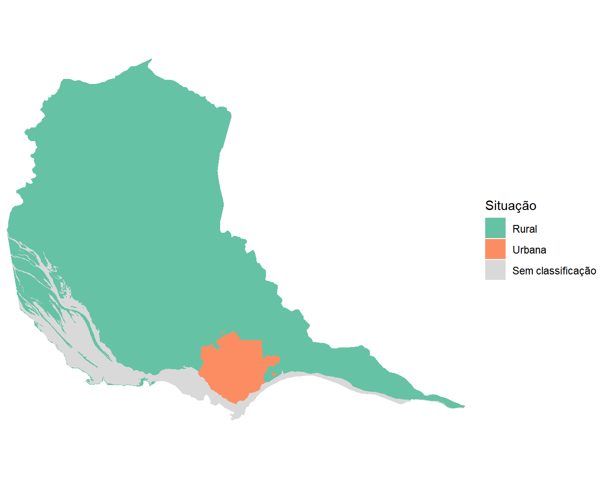
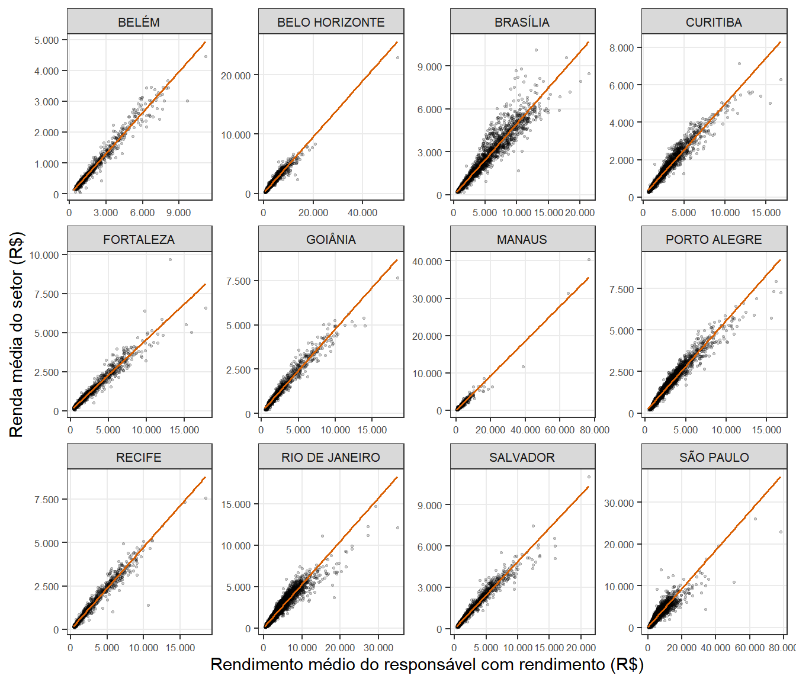
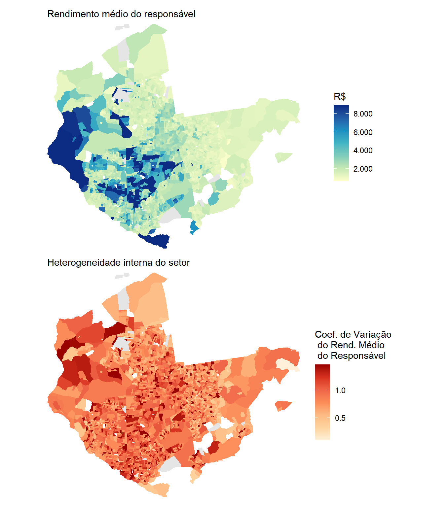
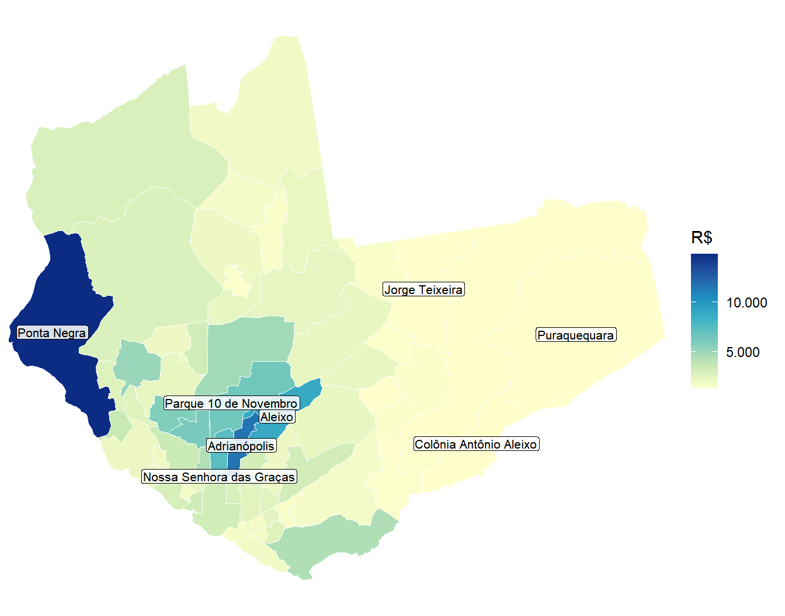
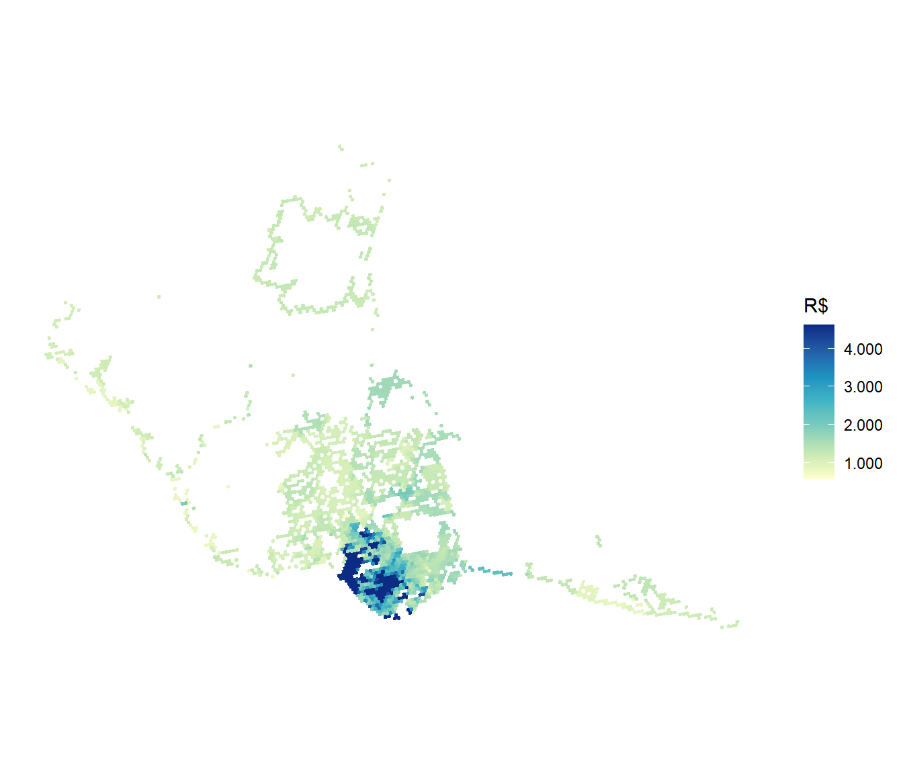
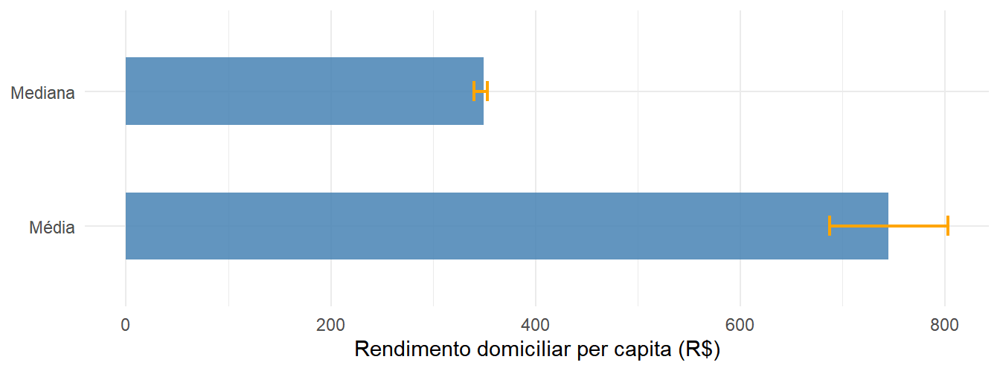
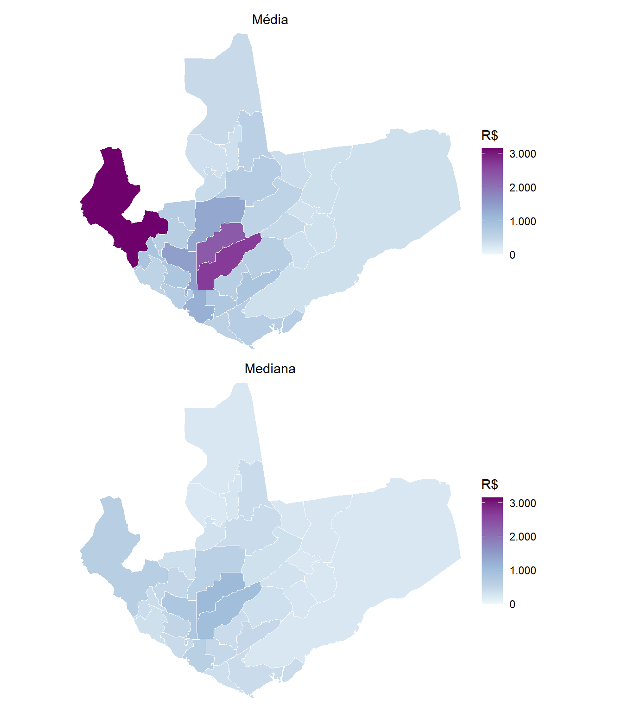
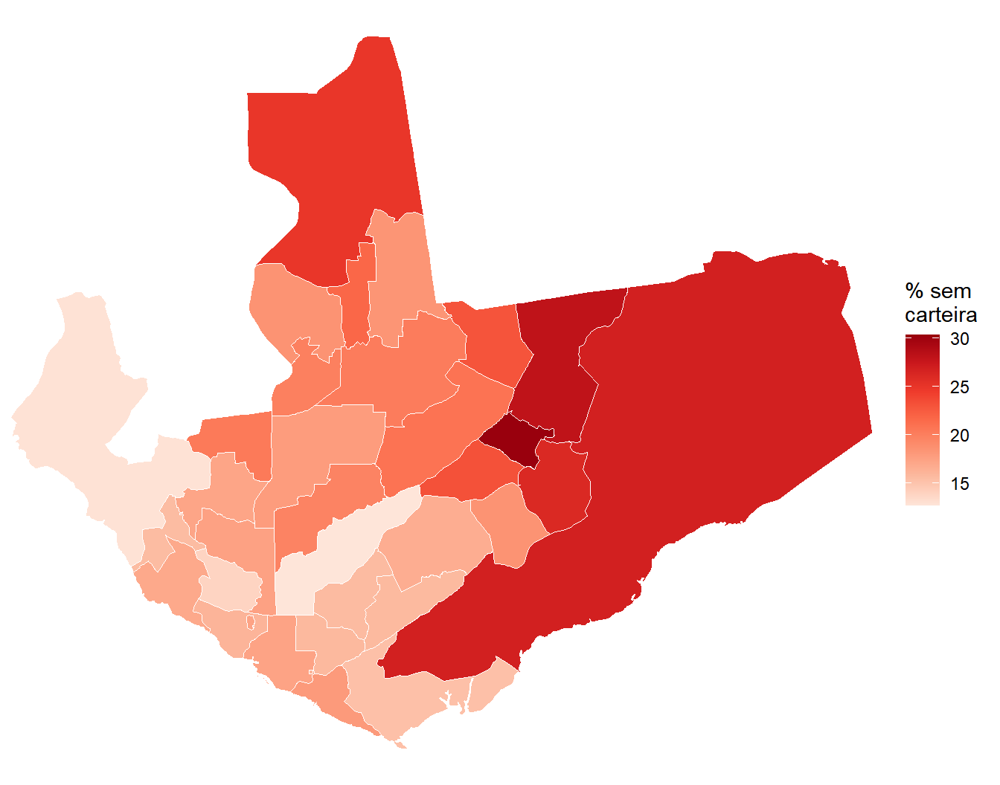
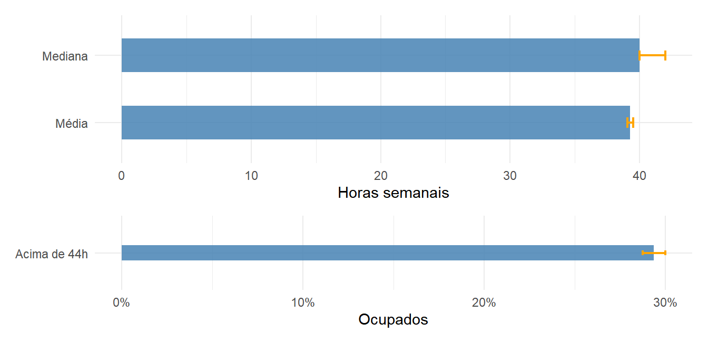
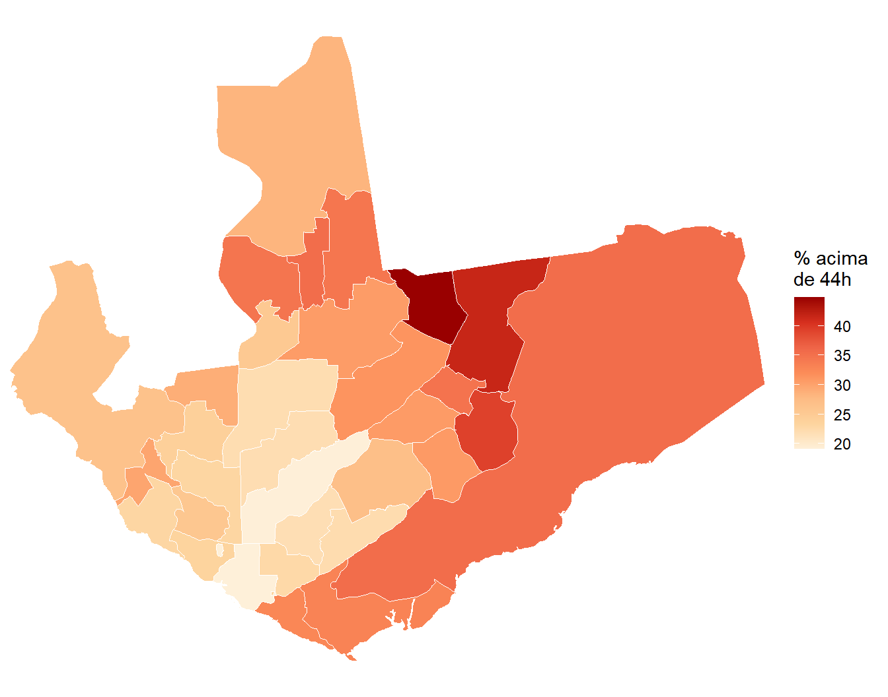

library(tidyverse)
library(censobr)
library(cnefetools)
library(geobr)
library(sf)
library(srvyr)
library(patchwork)16 Renda e Trabalho
16.1 Introdução
Renda é a variável que atravessa todos os capítulos anteriores. Ela explica boa parte de onde vivem os grupos descritos no Capítulo 12, das condições de moradia do Capítulo 13 e do tempo gasto no deslocamento do Capítulo 15. Entretanto, é uma das variáveis que o Censo 2022 tornou mais difícil de mapear.
Quem usou os Agregados por Setor Censitário de 2010 tinha o rendimento domiciliar por setor e podia calcular a renda média de cada pedaço da cidade. Em 2022 essa informação não existe. O arquivo de renda encolheu para cinco variáveis, todas referentes à pessoa responsável pelo domicílio, e o rendimento domiciliar saiu do universo.
Este capítulo trata o problema de frente. Começa delimitando a área que interessa analisar, mostra o que se perdeu entre as duas edições do Censo e verifica se o rendimento da pessoa responsável serve como substituto do rendimento domiciliar. Em seguida trabalha com o que restou nos agregados de 2022, levando a renda do setor censitário ao bairro e a uma grade hexagonal. Depois recorre aos microdados da amostra de 2010, que ainda permitem descrever a distribuição da renda, mesmo com perda de resolução espacial. Ao final, olha para uma das principais origens da renda, que é o trabalho, com a posição na ocupação e as horas trabalhadas.
O município escolhido é Manaus (AM), a maior cidade da região Norte e um caso em que a distância entre a renda média e a renda típica é particularmente grande.
Comecemos carregando os pacotes usados ao longo do capítulo1.
16.2 Decisão sobre o recorte urbano em Manaus (AM)
As fontes deste capítulo entram em quatro momentos. Os Agregados por Setor Censitário de 2022 sustentam a maior parte da análise e são preparados aqui. Os Agregados de 2010 aparecem na Seção 16.3.1, para testar se uma variável que deixou de existir pode ser substituída por outra. O CNEFE entra na Seção 16.4.1, como guia para levar a renda a uma malha diferente do setor censitário. Já os microdados da amostra de 2010 chegam na Seção 16.5, com o desenho amostral já conhecido dos capítulos anteriores.
A preparação começa por uma decisão que Manaus impõe e que vale para muitos municípios brasileiros. O território municipal é enorme e quase todo rural, enquanto praticamente toda a população vive numa mancha urbana comparativamente minúscula. Mapear o município inteiro produziria uma figura em que a cidade aparece como um borrão no canto, e os setores urbanos, que são o objeto da análise, ficariam pequenos demais para serem lidos.
Começamos obtendo o código do município e o arquivo Básico de 2022, que traz a coluna situacao, com a classificação de cada setor entre urbano e rural.
manaus <- lookup_muni(name_muni = "Manaus", year = 2022)$code_muni
manaus[1] 1302603Com o código em mãos, lemos o arquivo Básico e comparamos os dois grupos de setores em população e em área.
## Leitura do arquivo Basico dos agregados de 2022:
basico_2022 <- read_tracts(dataset = "Basico", year = 2022) |>
filter(code_muni == manaus) |>
select(code_tract, situacao, area_km2, V0001) |>
collect()
## Sumarizando a quantidade de setores, população e área por tipo de setor:
basico_2022 |>
group_by(situacao) |>
summarize(
setores = n(),
populacao = sum(V0001, na.rm = TRUE),
area_km2 = sum(area_km2, na.rm = TRUE)
) |>
mutate(
perc_populacao = 100 * populacao / sum(populacao),
perc_area = 100 * area_km2 / sum(area_km2)
) |>
knitr::kable(digits = 2, format.args = list(big.mark = ".", decimal.mark = ","))| situacao | setores | populacao | area_km2 | perc_populacao | perc_area |
|---|---|---|---|---|---|
| Rural | 109 | 20.012 | 9.764,77 | 0,97 | 85,65 |
| Urbana | 3.171 | 2.043.677 | 556,33 | 99,03 | 4,88 |
| NA | 1 | 0 | 1.079,90 | 0,00 | 9,47 |
O quadro justifica a decisão sozinho. Os setores urbanos concentram cerca de 99% da população em menos de 5% da área do município.
Os números ficam mais eloquentes quando levados ao mapa. Para isso, buscamos a malha de setores de 2022 com read_census_tract():
## Obtendo a malha de setores:
setores_geo <- read_census_tract(
code_tract = manaus,
year = 2022,
simplified = FALSE
) Com a geometria em mãos, produzimos o mapa coroplético usando a situação do setor como cor de preenchimento. Na coluna zone da malha de setores está a classificação do tipo de setor, com a qual podemos visualizar cada um dos tipos.
ggplot(setores_geo) +
geom_sf(aes(fill = zone), color = NA) +
scale_fill_brewer(palette = "Set2", name = "Situação", na.value = "gray85",
labels = c("Rural", "Urbana", "Sem classificação")) +
coord_sf(expand = FALSE) +
theme_minimal() +
theme(axis.text = element_blank(), axis.ticks = element_blank(),
panel.grid = element_blank())
A mancha urbana (alaranjada) aparece como um aglomerado compacto na porção sul do município, junto ao rio, cercada por uma extensão rural (verde) que ocupa quase todo o restante do território. É esse desequilíbrio que a tabela anterior já anunciava e que o mapa torna imediato.
NotaO setor com
NA está sobre o rio
Assim como em Macapá, Manaus tem um setor sem classificação urbana ou rural (NA). Ele reúne 1.079,9 km², quase um décimo da área do município, e não tem morador algum. A explicação é a mesma do caso anterior, pois esse setor está sobre a água, cobrindo os trechos do Rio Negro e do Rio Amazonas que banham o município. Você pode conferir isso reaproveitando o mapview() apresentado no Capítulo 14, aplicado agora a setores_geo do presente capítulo.
Daqui em diante, este capítulo trabalha apenas com os setores urbanos, e guardamos seus códigos em um vetor que servirá de filtro para todas as fontes.
manaus_sc_urb <- basico_2022 |>
filter(situacao == "Urbana") |>
pull(code_tract)
length(manaus_sc_urb)[1] 3171Com o recorte definido, podemos olhar para o que os agregados de renda oferecem em cada uma das duas edições do Censo.
16.3 Comparativo da renda nos Censos de 2010 e 2022
A renda por setor censitário mudou de natureza entre as duas últimas edições do Censo, e trabalhar com ela hoje exige entender esse processo. A melhor forma de dimensionar a perda é colocar as duas estruturas lado a lado. Em 2010, a informação de renda por setor censitário estava distribuída por três arquivos temáticos, além de variáveis no próprio Básico. Em 2022, restou um arquivo só, e com bem menos dentro dele, conforme demonstrado na Tabela 16.2.
| Informação | 2010 | 2022 |
|---|---|---|
| Rendimento médio do responsável | Básico V005 e V007 |
ResponsavelRenda V06004 |
| Variância do rendimento do responsável | Básico V006 e V008 |
ResponsavelRenda V06005 |
| Rendimento médio das pessoas de 10 anos ou mais | Básico V009 e V011 |
Não divulgado |
| Rendimento total dos domicílios permanentes | DomicilioRenda V003 |
Não divulgado |
| Domicílios por faixa de renda per capita | DomicilioRenda V005 a V013 |
Não divulgado |
| Responsáveis por faixa de rendimento | ResponsavelRenda, 141 colunas | Não divulgado |
Observe que saíram as faixas de renda, que permitiam descrever a distribuição dentro do setor, o rendimento das pessoas de dez anos ou mais e o rendimento domiciliar, que era a base de praticamente todo indicador de renda por setor produzido no país. Dada a notícia ruim, a subseção seguinte mostrará que nem tudo está perdido, pois a renda do responsável possui relação muito forte com a renda domiciliar média. Mostraremos que isso é verdade em 2010, e que talvez não haja motivo para desconfiar que seja diferente em 2022.
Neste ponto, cabe uma decisão didática relevante ao leitor. A subseção seguinte é completamente dispensável para o entendimento de como obter informações de renda do Censo, e quem quiser já entender esse processo pode partir direto para a Seção 16.4. A Seção 16.3.1 serve somente como um suporte argumentativo para podermos utilizar o dado que temos em 2022 (renda do responsável) para continuarmos entendendo, na maior parte dos casos, a distribuição de renda entre os setores.
16.3.1 A renda do responsável como proxy da renda média
O rendimento domiciliar deixou de ser divulgado, e a saída praticada por quem trabalha com os dados de 2022 é usar o rendimento da pessoa responsável em seu lugar. A substituição é plausível, já que o responsável costuma ser quem sustenta o domicílio, mas plausibilidade não é evidência. O Censo de 2010 permite testá-la, porque naquele ano as duas medidas coexistem no mesmo setor censitário.
Aqui, obteremos a renda média e o rendimento médio da pessoa responsável para cada setor de 2010 e mediremos o quanto a segunda explica a primeira. Se a associação for forte, usar somente a renda do responsável em 2022 não implicará uma perda tão substancial. Mas é preciso checar se isso se sustenta em todos os contextos.
Duas definições precisam ficar claras antes do código. A renda média do setor sai da divisão do rendimento total dos domicílios particulares permanentes, que é a V003 do arquivo DomicilioRenda, pelo número de moradores nesses domicílios, que é a V002 do Básico. O rendimento do responsável é a V007 do Básico, referente às pessoas responsáveis com rendimento, exatamente o mesmo universo da V06004 de 2022. Existe no Básico de 2010 uma segunda versão dessa medida, a V005, que inclui as responsáveis sem rendimento, mas ela não tem equivalente em 2022 e testá-la responderia a outra pergunta.
Como o censobr baixa o arquivo nacional e só depois aplica os filtros, ler o país inteiro não custa nenhum download além dos que já fizemos. Aproveitamos isso e montamos a base com todos os setores do Brasil.
## Baixando o arquivo Basico do Censo de 2010:
basico_br_2010 <- read_tracts(dataset = "Basico", year = 2010) |>
select(code_tract, code_muni, name_muni, V002, V007) |>
collect()
## Baixando o arquivo DomicilioRenda do Censo de 2010:
domrenda_br_2010 <- read_tracts(dataset = "DomicilioRenda", year = 2010) |>
select(code_tract, V003) |>
collect()
## Juntando os dois arquivos anteriores em um único:
renda_br_2010 <- basico_br_2010 |>
left_join(domrenda_br_2010, by = "code_tract") |>
mutate(renda_media = V003 / V002) |>
filter(is.finite(renda_media), is.finite(V007))
nrow(renda_br_2010)[1] 303073O filtro com is.finite() descarta os setores sem moradores em domicílios particulares permanentes, que produziriam divisão por zero, e os setores sem rendimento divulgado. Restam pouco mais de trezentos mil setores, de um total de cerca de trezentos e dez mil.
Começamos por Manaus, ajustando uma regressão linear simples2 da renda média (\(y\)) pelo rendimento do responsável (\(x\)).
## Filtrando para setores censitários de Manaus:
renda_manaus_2010 <- renda_br_2010 |>
filter(code_muni == manaus)
## Regressão linear pela função lm():
modelo_manaus <- lm(renda_media ~ V007, data = renda_manaus_2010)
## Resultados do modelo:
summary(modelo_manaus)
Call:
lm(formula = renda_media ~ V007, data = renda_manaus_2010)
Residuals:
Min 1Q Median 3Q Max
-6133.6 -34.8 4.3 48.4 4838.5
Coefficients:
Estimate Std. Error t value Pr(>|t|)
(Intercept) -73.867891 5.988138 -12.34 <2e-16 ***
V007 0.464706 0.001882 246.97 <2e-16 ***
---
Signif. codes: 0 '***' 0.001 '**' 0.01 '*' 0.05 '.' 0.1 ' ' 1
Residual standard error: 249.6 on 2404 degrees of freedom
Multiple R-squared: 0.9621, Adjusted R-squared: 0.9621
F-statistic: 6.099e+04 on 1 and 2404 DF, p-value: < 2.2e-16
NotaA função
lm() e a leitura do summary()
lm(), de linear model, ajusta uma regressão linear. Seu primeiro argumento é uma fórmula, escrita com o til, em que a variável à esquerda é a que se quer explicar e as da direita são as explicativas. A leitura de renda_media ~ V007 é “renda média em função do rendimento do responsável”. O argumento data informa onde estão as colunas.
O summary() aplicado a um modelo devolve bem mais do que o summary() de um vetor. Três informações interessam aqui.
O coeficiente de V007, na coluna Estimate, é a inclinação da reta. Ele indica quantos reais a renda média do setor sobe a cada real a mais no rendimento do responsável.
O intercepto é o valor previsto quando o rendimento do responsável é zero. Em modelos como este ele raramente tem significado concreto, porque nenhum setor tem rendimento zero, e serve apenas para posicionar a reta.
O Multiple R-squared, ou \(R^2\), é a proporção da variação da renda média que o modelo explica, indo de 0 a 1. É ele que responde à pergunta desta subseção.
Em Manaus, a inclinação de 0,46 indica que a renda média do setor sobe cerca de quarenta e seis centavos a cada real adicional no rendimento do responsável. O valor abaixo de um é esperado, porque a renda do responsável é dividida entre todos os moradores do domicílio. O \(R^2\) de 0,96 é a informação central, pois significa que o rendimento do responsável, sozinho, explica noventa e seis por cento da variação da renda média entre os setores de Manaus.
Um município isolado, porém, não sustenta uma recomendação de método. Repetimos o exercício para doze capitais, escolhidas para cobrir as cinco regiões e portes bem distintos.
## Seleção de códigos IBGE de algumas capitais:
capitais <- c(1501402, 3106200, 5300108, 4106902, 2304400, 5208707,
1302603, 4314902, 2611606, 3304557, 2927408, 3550308)
## Filtrando por essas capitais:
renda_capitais <- renda_br_2010 |>
filter(code_muni %in% capitais)
## Produzindo gráfico de dispersão com reta da regressão para cada capital:
ggplot(renda_capitais, aes(x = V007, y = renda_media)) +
geom_point(alpha = 0.2, size = 0.5) +
geom_smooth(method = "lm", se = FALSE, color = "#D95F02", linewidth = 0.7) +
facet_wrap(~ name_muni, scales = "free", ncol = 4) +
scale_x_continuous(labels = scales::label_number(big.mark = ".", decimal.mark = ",")) +
scale_y_continuous(labels = scales::label_number(big.mark = ".", decimal.mark = ",")) +
labs(x = "Rendimento médio do responsável com rendimento (R$)",
y = "Renda média do setor (R$)") +
theme_bw() +
theme(panel.grid.minor = element_blank(),
strip.text = element_text(size = 8),
axis.text = element_text(size = 6.5))
Nota
geom_smooth() e facet_wrap()
O geom_smooth() acrescenta ao gráfico uma linha ajustada aos pontos. Com method = "lm" a linha é a mesma reta que o lm() produziria, o que permite ver o ajuste sem calcular nada à parte. O argumento se = FALSE suprime a faixa de incerteza em volta da linha, que aqui apenas poluiria painéis com milhares de pontos.
O facet_wrap() divide o gráfico em painéis segundo uma variável, informada também por fórmula, e distribui os painéis em linhas e colunas, com ncol controlando quantas colunas. Ele apareceu na tabela de componentes do gráfico no Capítulo 4 e é usado aqui pela primeira vez. O scales = "free" deixa cada painel com sua própria escala, o que é indispensável quando as cidades têm patamares de renda muito diferentes, e por isso a comparação entre painéis deve se ater ao formato da nuvem, e nunca à posição dos pontos.
A nuvem de pontos tem formatos parecidos nas doze capitais, alongada e próxima da reta. Os painéis também deixam ver o efeito da cauda longa da renda. Em Belo Horizonte, Manaus e São Paulo, uns poucos setores de rendimento muito alto esticam os eixos e comprimem o restante da nuvem contra a origem.
Verifiquemos numericamente o quão forte é essa relação em cada uma das capitais. No código abaixo, em vez de repetir à mão o lm() de Manaus doze vezes, ajustamos um modelo por capital dentro do summarize(), depois de agrupar por município, e retiramos de cada modelo o seu \(R^2\). O valor é o mesmo que aparece na linha Multiple R-squared da saída do summary(), e pode ser acessado diretamente com summary(modelo)$r.squared, que devolve apenas esse número.
renda_capitais |>
group_by(name_muni) |>
summarize(
setores = n(),
r2 = summary(lm(renda_media ~ V007))$r.squared
) |>
arrange(desc(r2)) |>
knitr::kable(col.names = c("Capital", "Setores", "R²"),
digits = 3,
format.args = list(big.mark = ".", decimal.mark = ","))| Capital | Setores | R² |
|---|---|---|
| BELÉM | 1.312 | 0,969 |
| RECIFE | 1.829 | 0,967 |
| SALVADOR | 3.530 | 0,965 |
| GOIÂNIA | 1.621 | 0,962 |
| MANAUS | 2.406 | 0,962 |
| FORTALEZA | 3.007 | 0,959 |
| BELO HORIZONTE | 3.830 | 0,956 |
| PORTO ALEGRE | 2.381 | 0,951 |
| CURITIBA | 2.369 | 0,942 |
| RIO DE JANEIRO | 10.158 | 0,939 |
| BRASÍLIA | 4.293 | 0,936 |
| SÃO PAULO | 18.182 | 0,900 |
Observe que o resultado é uniforme, com onze das doze capitais apresentando \(R^2\) acima de 0,93, e São Paulo, com 0,900, fechando a lista. Mesmo no menor valor da tabela, o rendimento do responsável responde por cerca de noventa por cento da variação da renda média entre os setores da cidade.
O mesmo cálculo aplicado a todos os setores do país de uma vez confirma o padrão em escala nacional.
summary(lm(renda_media ~ V007, data = renda_br_2010))$r.squared[1] 0.9302285Reunindo os mais de trezentos mil setores do Brasil numa única regressão, o \(R^2\) é de 0,93, próximo do que se observou nas capitais.
Encerramos por aqui a parte computacional e fechamos com um panorama, que se obtém repetindo o mesmo cálculo município a município em vez de agrupar o país inteiro. Entre os 4.505 municípios com pelo menos dez setores censitários, o \(R^2\) mediano cai para 0,87, o primeiro quartil fica em 0,78 e menos de quatro em cada dez ultrapassam 0,90. O que separa os dois grupos é o porte. Nos municípios de dez a cinquenta setores o ajuste mediano é de 0,85 e apenas três em cada dez passam de 0,90, enquanto entre os de mais de mil setores a mediana chega a 0,95 e quase nove em cada dez passam. O resultado é coerente com o que a regressão mede, já que municípios pequenos têm poucos setores, de modo que o ruído responde por uma fatia maior da variação total.
O saldo prático é que em capitais e municípios com centenas de setores, o rendimento do responsável de 2022 pode ser lido como um indicador (proxy) da renda média do setor, e mapas construídos com a V06004 reproduzem de perto o padrão espacial que o rendimento domiciliar produziria. Em municípios pequenos a aproximação perde força e precisa ser analisada caso a caso, verificação que os dados de 2022 já não permitem fazer, porque a variável de referência não existe mais. Destaca-se, entretanto, que em nenhum dos dois casos a V06004 deve ser lida como renda por morador, pois a inclinação em torno de 0,46 mostra que as escalas são diferentes, e o que a variável sustenta é a comparação entre setores.
Estabelecido esse entendimento, vamos enfim começar a trabalhar com os dados de renda que o Censo nos disponibiliza.
16.4 Estruturação dos agregados do Censo de 2022
No arquivo ResponsavelRenda de 2022, existem cinco variáveis. Duas descrevem moradores, duas descrevem rendimento e uma conta responsáveis, conforme indicado na Tabela 16.4.
| Código | Descrição |
|---|---|
V06001 |
Pessoas responsáveis em domicílios particulares permanentes ocupados |
V06002 |
Moradores em domicílios particulares permanentes ocupados |
V06003 |
Variância do número de moradores |
V06004 |
Rendimento nominal médio mensal das pessoas responsáveis com rendimento |
V06005 |
Variância desse rendimento |
Duas ressalvas precisam acompanhar qualquer uso da V06004. A primeira está no nome da variável, pois o rendimento médio se refere às pessoas responsáveis com rendimento, o que exclui do cálculo as responsáveis sem qualquer rendimento. A média não descreve todas as responsáveis do setor, e sim as que declararam ter renda. Em áreas com muitas responsáveis sem rendimento, isso empurra a média para cima. A segunda é que a variável já vem calculada como média. Não se relativiza, não se soma entre setores e, ao agregar para bairro, é preciso ponderar pelo número de responsáveis, e não tirar a média das médias.
Com as ressalvas postas, lemos o arquivo para os setores urbanos de Manaus e olhamos a distribuição da V06004.
resprenda_2022 <- read_tracts(dataset = "ResponsavelRenda", year = 2022) |>
filter(code_tract %in% manaus_sc_urb) |>
select(code_tract, code_neighborhood, name_neighborhood,
V06001, V06002, V06003, V06004, V06005) |>
collect()
summary(resprenda_2022$V06004) Min. 1st Qu. Median Mean 3rd Qu. Max. NAs
624 1498 1853 2890 2690 50803 27 A distribuição é fortemente assimétrica, com a média bem acima da mediana e um valor máximo dezenas de vezes maior que o valor típico. É o comportamento esperado de uma variável de renda, e já sugere o que veremos adiante sobre média e mediana.
A variância divulgada na V06005 permite algo que raramente se faz. Sua raiz quadrada é o desvio-padrão do rendimento dentro do setor, e a razão entre desvio-padrão e média, conhecida como coeficiente de variação, indica o quanto o setor é internamente heterogêneo. Dois setores podem ter a mesma renda média e realidades completamente diferentes.
resprenda_2022 <- resprenda_2022 |>
mutate(
desvio_padrao = sqrt(V06005),
coef_variacao = desvio_padrao / V06004
)
summary(resprenda_2022$coef_variacao) Min. 1st Qu. Median Mean 3rd Qu. Max. NAs
0.09798 0.69098 0.82192 0.93420 0.99083 12.98463 27 Metade dos setores de Manaus tem desvio-padrão em torno de oitenta por cento da média, o que é bastante heterogeneidade dentro de uma unidade tão pequena. Levemos ao mapa a renda média e o coeficiente de variação, um sobre o outro.
## Juntando arquivo geográfico de Manaus com o Arquivo ResponsavelRenda
manaus_geo <- setores_geo |>
select(code_tract) |>
inner_join(resprenda_2022, by = "code_tract")
## Obtendo percentil 95 da renda média do resp. e do coeficiente de variação da renda:
limite_renda <- quantile(manaus_geo$V06004, 0.95, na.rm = TRUE)
limite_cv <- quantile(manaus_geo$coef_variacao, 0.95, na.rm = TRUE)
## Mapeando ambas:
mapa_renda <- ggplot(manaus_geo) +
geom_sf(aes(fill = V06004), color = NA) +
scale_fill_distiller(palette = "YlGnBu", direction = 1,
name = "R$", na.value = "gray90",
limits = c(NA, limite_renda), oob = scales::squish,
labels = scales::label_number(big.mark = ".", decimal.mark = ",")) +
coord_sf(expand = FALSE) +
labs(subtitle = "Rendimento médio do responsável") +
theme_minimal() +
theme(axis.text = element_blank(), axis.ticks = element_blank(),
panel.grid = element_blank())
mapa_cv <- ggplot(manaus_geo) +
geom_sf(aes(fill = coef_variacao), color = NA) +
scale_fill_distiller(palette = "OrRd", direction = 1,
name = "Coef. de Variação\n do Rend. Médio\n do Responsável",
na.value = "gray90",
limits = c(NA, limite_cv), oob = scales::squish) +
coord_sf(expand = FALSE) +
labs(subtitle = "Heterogeneidade interna do setor") +
theme_minimal() +
theme(axis.text = element_blank(), axis.ticks = element_blank(),
panel.grid = element_blank())
mapa_renda / mapa_cv
NotaLimitando a escala de cor com
oob = scales::squish
Renda tem cauda longa. Em Manaus, metade dos setores tem rendimento médio do responsável abaixo de dois mil reais, mas o valor máximo passa de cinquenta mil. Numa escala de cor linear, esse único setor consome quase toda a paleta e o restante da cidade fica indistinguível.
O Capítulo 7 resolveu problema parecido com a transformação de raiz quadrada, que comprime os valores altos. Aqui usamos outro recurso, que é limitar a escala. O argumento limits do scale_fill_* define o intervalo representado, e o argumento oob, de out of bounds, decide o que fazer com os valores fora dele. O padrão é transformá-los em ausentes, o que deixaria buracos no mapa. Com oob = scales::squish, eles são empurrados para o extremo da escala e recebem a cor mais intensa.
Adotamos como limite o percentil 95 de cada variável, calculado no próprio código. Os cerca de 5% de setores acima dele aparecem todos com a cor máxima, e a informação que se perde é a distinção entre esses setores extremos. Em troca, ganha-se a distinção entre os 95% restantes, que é onde está a cidade.
A escolha precisa ser declarada, e é por isso que a legenda da Figura 16.3 informa o corte. Um mapa com escala limitada e sem aviso induz o leitor a subestimar os extremos.
Os dois mapas não coincidem. Há setores de renda média alta e baixa dispersão, que são áreas socialmente homogêneas, e há setores de renda média intermediária e dispersão muito alta, onde convivem situações econômicas distintas. Um indicador de renda que ignore a segunda dimensão trata os dois casos como equivalentes.
Embora o setor censitário tenha uma alta resolução espacial, essa granularidade dificulta a leitura de quem não conhece a cidade em detalhe. Levar a renda ao bairro resolve isso, e a operação é simples porque o próprio arquivo de agregados traz a coluna name_neighborhood, com o bairro a que cada setor pertence, e a code_neighborhood, com o código correspondente. Basta agrupar por bairro e resumir.
O cuidado está em como resumir. A V06004 já é uma média, e a segunda ressalva feita no início desta seção advertia justamente sobre isso. Tirar a média simples das médias dos setores daria o mesmo peso a um setor com quinhentas pessoas responsáveis e a outro com cinquenta, o que distorceria o resultado em favor dos setores pequenos. A média precisa ser ponderada pelo número de pessoas responsáveis, que é a V06001. No mapa, rotulamos apenas os cinco bairros de maior e os três de menor rendimento, selecionados com o slice_max() e o slice_min() do Capítulo 11, que são justamente os comentados logo adiante.
A malha exige um cuidado antes disso. A read_neighborhood() devolve 76 polígonos para os 63 bairros de Manaus, porque alguns deles vêm repartidos em mais de uma parte, e Jorge Teixeira sozinho ocupa três linhas. Sobre uma malha assim, o slice_max() gasta suas cinco posições com bairros repetidos e deixa de fora quem deveria estar no mapa. Unimos então as partes de cada bairro com o group_by() e o summarize() do Capítulo 5 antes de juntar os valores de renda.
## Obtendo o rendimento médio dos responsáveis ponderado para os bairros:
renda_bairro_ag <- resprenda_2022 |>
filter(!is.na(code_neighborhood)) |>
group_by(code_neighborhood, name_neighborhood) |>
summarize(
renda_media = weighted.mean(V06004, V06001, na.rm = TRUE),
.groups = "drop"
)
## Unindo as partes de cada bairro antes de juntar os dados de renda:
bairros_geo <- read_neighborhood(year = 2022, code_muni = manaus) |>
group_by(code_neighborhood) |>
summarize(.groups = "drop") |>
left_join(renda_bairro_ag, by = "code_neighborhood")
## Selecionando os cinco maiores e os três menores para rotular no mapa:
destaques <- bind_rows(
bairros_geo |> slice_max(renda_media, n = 5),
bairros_geo |> slice_min(renda_media, n = 3)
) |>
## Deslocando um rótulo que se sobrepõe ao do bairro vizinho:
mutate(ajuste_y = if_else(name_neighborhood == "Nossa Senhora das Graças",
-0.012, 0))
ggplot(bairros_geo) +
geom_sf(aes(fill = renda_media), color = "white", linewidth = 0.2) +
geom_sf_label(data = destaques, aes(label = name_neighborhood),
nudge_y = destaques$ajuste_y,
size = 2.8, alpha = 0.85,
label.padding = unit(0.12, "lines")) +
scale_fill_distiller(palette = "YlGnBu", direction = 1,
name = "R$", na.value = "gray90",
labels = scales::label_number(big.mark = ".", decimal.mark = ",")) +
coord_sf(expand = FALSE) +
labs(x = NULL, y = NULL) +
theme_minimal() +
theme(axis.text = element_blank(), axis.ticks = element_blank(),
panel.grid = element_blank())
Nota
weighted.mean() e a média de médias
A mean() trata todas as observações como equivalentes. A weighted.mean() recebe um segundo vetor, o dos pesos, e calcula a média em que cada observação entra com a importância que o peso lhe dá. A chamada weighted.mean(V06004, V06001) soma os rendimentos médios de cada setor multiplicados pelo número de responsáveis daquele setor e divide pelo total de responsáveis do bairro, que é exatamente o rendimento médio do bairro.
A regra vale para qualquer variável dos agregados que já venha calculada como média ou como proporção. Somar ou tirar média simples dessas variáveis produz um número que não corresponde a nenhuma pergunta. Para variáveis de total, como população ou contagem de domicílios, a agregação é a soma direta, sem peso nenhum.
O na.rm = TRUE descarta os setores em que a V06004 não foi divulgada. Em Manaus são 27 setores, e neles a V06001 também vem ausente, de modo que eles saem do numerador e do denominador ao mesmo tempo.
Ponta Negra aparece isolada no topo, com rendimento médio próximo de quinze mil reais, seguida por Adrianópolis, Aleixo, Nossa Senhora das Graças e Parque 10 de Novembro, que formam um corredor contínuo na porção centro-sul. No extremo oposto ficam Colônia Antônio Aleixo, Puraquequara e Jorge Teixeira, todos abaixo de mil e quinhentos reais. A distância entre o primeiro e o último bairro é de mais de dez vezes, e a mediana entre os 63 bairros fica em torno de dois mil e trezentos reais.
Vale registrar o que essa agregação não corrige. Ela troca a unidade espacial e reduz o ruído, e continua sendo uma média, com todas as ressalvas apontadas no início desta seção. Além disso, o peso usado é o total de pessoas responsáveis, enquanto a V06004 se refere apenas às que têm rendimento, número que os agregados de 2022 não divulgam. A ponderação é, portanto, a melhor aproximação disponível, e não a exata3.
16.4.1 Levando a renda a outros recortes
O Capítulo 7 apresentou a interpolação dasimétrica do pacote cnefetools, que redistribui informação dos setores para outras malhas usando os endereços do CNEFE como guia. Naquele capítulo, o exemplo usou variáveis de total. Aqui usamos a única variável de média disponível no pacote, que é justamente a V06004, sob o nome avg_inc_resp.
Há uma distinção muito importante que merece ser relembrada. Para uma variável de total, o valor do setor é dividido entre os pontos de endereço que caem dentro dele, e a unidade-alvo recebe a soma dos pontos que a compõem. Para uma variável de média, o valor do setor é atribuído a cada ponto, e a unidade-alvo recebe a média dos valores dos pontos que estão dentro dela. A consequência prática é que a média resultante fica ponderada pela densidade de endereços, e não pela área, o que é o comportamento desejável.
A malha de destino utilizada aqui é a grade hexagonal H3 na resolução 8, com células de cerca de 0,7 km², a mesma usada no exemplo de Recife no Capítulo 7. Essa troca do bairro pelo hexágono pode ser vantajosa do ponto de vista da análise espacial. O bairro é uma unidade administrativa de tamanho muito desigual, e a agregação feita há pouco herdou essa desigualdade, com Ponta Negra ocupando uma área imensa e os bairros centrais cabendo em poucos quarteirões. O hexágono tem área constante, o que torna as células comparáveis entre si e mostra variações internas que o bairro dissolve quando os setores têm grande granularidade.
Começamos realizando a interpolação para a malha hexagonal:
renda_h3 <- tracts_to_h3(
code_muni = manaus,
h3_resolution = 8,
vars = "avg_inc_resp"
)O objeto devolvido é um sf com um hexágono por célula da grade e a variável já interpolada. A grade cobre o município inteiro, e as células que não contêm nenhum endereço do CNEFE vêm com valor ausente, o que em Manaus é a maioria delas, dada a extensão da área sem ocupação. Vale conferir a amplitude do resultado antes de mapear.
renda_h3 |>
st_drop_geometry() |>
summarize(
hexagonos = n(),
com_valor = sum(!is.na(avg_inc_resp)),
minimo = min(avg_inc_resp, na.rm = TRUE),
mediana = median(avg_inc_resp, na.rm = TRUE),
maximo = max(avg_inc_resp, na.rm = TRUE)
) hexagonos com_valor minimo mediana maximo
1 15477 2293 575 1276.8 40720A função reporta, durante a execução, a proporção de pontos do CNEFE efetivamente aproveitados e a de setores em que a variável estava ausente. Vale sempre ler essas mensagens, porque uma cobertura baixa invalida o resultado. Em Manaus, a avg_inc_resp foi atribuída a 99,8% dos pontos elegíveis e estava ausente em 2,5% dos setores, o que é uma cobertura confortável.
Antes de mapear, descartamos as células vazias e reaproveitamos a escala limitada ao percentil 95 com oob = scales::squish, já usada na Figura 16.3. Observe como aparecem resultados de renda além da mancha urbana, pois a função tracts_to_h3() realiza o mapeamento para todo o município, incluindo a área rural.
renda_h3_ocupados <- renda_h3 |>
filter(!is.na(avg_inc_resp))
limite_h3 <- quantile(renda_h3_ocupados$avg_inc_resp, 0.95)
ggplot(renda_h3_ocupados) +
geom_sf(aes(fill = avg_inc_resp), color = NA) +
scale_fill_distiller(palette = "YlGnBu", direction = 1,
name = "R$", na.value = "gray90",
limits = c(NA, limite_h3), oob = scales::squish,
labels = scales::label_number(big.mark = ".", decimal.mark = ",")) +
theme_minimal() +
theme(axis.text = element_blank(), axis.ticks = element_blank(),
panel.grid = element_blank())
Note o ganho de resolução espacial em relação ao mapa por bairro, considerando o contexto urbano. A divisão geral reaparece, com os rendimentos altos a oeste e no corredor centro-sul e os baixos a leste e ao norte, mas o que muda é o interior de cada bairro. Ponta Negra, que na Figura 16.4 aparece com um único valor de cerca de quinze mil reais, se decompõe aqui em 39 células que vão de mil e duzentos a mais de quarenta mil reais.
Essa variação interna merece um comentário, porque a figura não a mostra por inteiro. A escala limitada ao percentil 95 corta em pouco menos de cinco mil reais, e quase todas as células de Ponta Negra ficam acima desse valor, de modo que a área aparece uniformemente escura. A informação continua no dado, e recuperá-la exige elevar o limite da escala ou consultar os valores diretamente. É o preço da legibilidade do restante do mapa, e o motivo pelo qual o corte precisa ser declarado.
Valem as mesmas ressalvas listadas no Capítulo 7. A interpolação assume que a variável se distribui de forma homogênea entre os endereços do setor, o que é uma aproximação, e nenhuma interpolação cria informação que não existia. O hexágono aumenta a resolução aparente do mapa sem aumentar a resolução do dado, que continua sendo o setor censitário.
16.5 Estruturação dos microdados do Censo de 2010
Todos os indicadores até aqui são médias, seja por setor censitário, seja por bairro. Os agregados não permitem outra coisa, porque não divulgam nem mediana nem faixas. Isso só é viabilizado com os microdados da amostra, pois temos resultados por indivíduo que podem ser agregados ao nível da área de ponderação com qualquer estatística descritiva.
Como a média é fortemente puxada pelos valores altos em variáveis de renda, ela descreve mal a situação típica, conforme veremos. Antes, vamos estruturar os nossos microdados para as análises:
## Lendo a malha de áreas de ponderação de Manaus
ap_manaus <- read_weighting_area(
code_weighting = manaus,
year = 2010,
simplified = FALSE
)
## Obtendo os códigos dessas áreas de ponderação
ap_cods <- ap_manaus |>
pull(code_weighting)
## Variáveis a serem selecionadas dos microdados
cols_pes <- c(
"V0300", # Identificador do domicílio (conglomerado)
"V0010", # Peso amostral calibrado
"code_weighting", # Área de ponderação
"V1006", # Situação do domicílio, urbana ou rural
"V0641", "V0642", "V0643", "V0644", # Condição de ocupação na semana de referência
"V0648", # Posição na ocupação no trabalho principal
"V0653", # Horas habitualmente trabalhadas por semana
"V6511", # Rendimento no trabalho principal
"V6531" # Rendimento domiciliar per capita
)
## Lendo o arquivo de microdados (tabela de indivíduos):
md_manaus <- read_population(year = 2010, columns = cols_pes) |>
filter(code_weighting %in% ap_cods, V1006 == "1") |>
collect()
## Obtendo o total populacional de cada área de ponderação para a correção de
## população finita no plano amostral:
pes_ap <- md_manaus |>
group_by(code_weighting) |>
summarize(n_ind = sum(V0010))
md_manaus <- md_manaus |>
left_join(pes_ap, by = join_by(code_weighting))
## plano amostral:
pa_manaus <- md_manaus |>
as_survey_design(
ids = V0300,
strata = code_weighting,
weights = V0010,
fpc = n_ind
)
c(areas_de_ponderacao = length(ap_cods), registros = nrow(md_manaus))areas_de_ponderacao registros
33 86989 O filtro por V1006 mantém a coerência com a restrição urbana da Seção 16.2. Ele remove poucas centenas de registros e todas as áreas de ponderação seguem com amostra suficiente, o que confirma que a restrição é de recorte territorial, e não de conteúdo.
As áreas de ponderação, porém, são polígonos que cobrem o município inteiro, inclusive a parte rural, e uma delas sozinha responde por 96% da área de Manaus. Dedicar quase todo o mapa a ela deixaria o restante ilegível, e por isso ficamos apenas com as áreas de ponderação centradas na mancha urbana. O teste é feito em dois passos, unindo os setores urbanos de setores_geo numa geometria só e verificando se o centroide de cada área de ponderação cai dentro dela.
## Unindo os setores urbanos em uma geometria única:
urbana_2022 <- setores_geo |>
filter(zone == "Urbana") |>
st_union()
## Mantendo as áreas de ponderação cujo centroide cai na mancha urbana:
ap_urbanas <- ap_manaus |>
filter(lengths(st_within(st_centroid(ap_manaus), urbana_2022)) > 0)
nrow(ap_urbanas)[1] 32Das 33 áreas de ponderação de Manaus, 32 passam no teste. A única descartada é a maior de todas, com 11.038 km², e o descarte vale apenas para os mapas, já que as estimativas municipais continuam calculadas sobre a amostra inteira.
Nota
st_within() e a escolha do predicado espacial
O st_within() compara duas geometrias e informa se a primeira está contida na segunda. Ele devolve uma lista com uma posição por elemento de x, e cada posição guarda os índices de y que satisfazem a relação, de modo que lengths() conta quantos são e o > 0 transforma isso no vetor lógico que o filter() espera.
A escolha do predicado é o ponto delicado. O caminho mais óbvio seria manter as áreas de ponderação que cruzam a mancha urbana, com st_intersects(), mas em Manaus isso não descarta nada, porque as áreas rurais fazem fronteira com as urbanas e o simples encostar já conta como interseção. Testar o centroide é mais exigente e resolve o caso, ao custo de descartar áreas cuja ocupação urbana existe, mas não está no meio do polígono.
Com as predefinições realizadas, calculamos, primeiro, a média e a mediana do rendimento domiciliar per capita. As duas medidas vêm de funções diferentes, a survey_mean() e a survey_median(), e por isso cada uma exige a sua própria chamada. Para colocá-las no mesmo gráfico, repetimos a estratégia da Figura 15.1 do Capítulo 15, empilhando os dois resultados com bind_rows() e identificando cada um por uma coluna nova. O resultado aparece na Figura 16.6.
renda_mun <- bind_rows(
pa_manaus |>
summarize(valor = survey_mean(V6531, na.rm = TRUE, vartype = "ci")) |>
mutate(medida = "Média"),
pa_manaus |>
summarize(valor = survey_median(V6531, na.rm = TRUE, vartype = "ci")) |>
mutate(medida = "Mediana")
)
renda_mun# A tibble: 2 × 4
valor valor_low valor_upp medida
<dbl> <dbl> <dbl> <chr>
1 745. 688. 803. Média
2 350. 340 353. Medianaggplot(renda_mun, aes(x = medida, y = valor,
ymin = valor_low, ymax = valor_upp)) +
geom_col(fill = "steelblue", alpha = 0.85, width = 0.5) +
geom_errorbar(width = 0.15, color = "orange", linewidth = 0.8) +
coord_flip() +
scale_y_continuous(labels = scales::label_number(big.mark = ".", decimal.mark = ",")) +
labs(x = NULL, y = "Rendimento domiciliar per capita (R$)") +
theme_minimal()
Repare como a média é mais que o dobro da mediana. Metade dos moradores de Manaus vivia em domicílios com rendimento per capita abaixo de trezentos e cinquenta reais, enquanto a média passava de setecentos. Nenhum indicador construído a partir dos agregados de 2022 revelaria isso, porque lá só existe média.
Os quartis e o percentil 90 ajudam a completar o retrato:
pa_manaus |>
summarize(
quartis = survey_quantile(V6531, quantiles = c(0.25, 0.5, 0.75, 0.9),
na.rm = TRUE, vartype = "ci")
) |>
select(starts_with("quartis_q")) |>
select(!ends_with("_low") & !ends_with("_upp"))# A tibble: 1 × 4
quartis_q25 quartis_q50 quartis_q75 quartis_q90
<dbl> <dbl> <dbl> <dbl>
1 182 350. 673. 1380O quarto mais pobre da população vivia com até cento e oitenta reais per capita, e o décimo mais rico começava acima de mil e trezentos. A distância entre os extremos é de mais de sete vezes.
Por fim, a comparação entre média e mediana pode ser levada ao território:
## Produzindo indicadores por área de ponderação:
renda_ap <- pa_manaus |>
group_by(code_weighting) |>
summarize(
media = survey_mean(V6531, na.rm = TRUE),
mediana = survey_median(V6531, na.rm = TRUE)
)
## Juntando com a malha de áreas de ponderação:
renda_ap_geo <- ap_urbanas |>
left_join(renda_ap, by = join_by(code_weighting))
## Mapas:
mapa_media <- ggplot(renda_ap_geo) +
geom_sf(aes(fill = media), color = "white", linewidth = 0.2) +
scale_fill_distiller(palette = "BuPu", direction = 1, name = "R$",
na.value = "gray90", limits = c(0, max(renda_ap$media)),
labels = scales::label_number(big.mark = ".", decimal.mark = ",")) +
coord_sf(expand = FALSE) +
labs(subtitle = "Média") +
theme_minimal() +
theme(axis.text = element_blank(), axis.ticks = element_blank(),
panel.grid = element_blank(),
plot.subtitle = element_text(hjust = 0.5))
mapa_mediana <- ggplot(renda_ap_geo) +
geom_sf(aes(fill = mediana), color = "white", linewidth = 0.2) +
scale_fill_distiller(palette = "BuPu", direction = 1, name = "R$",
na.value = "gray90", limits = c(0, max(renda_ap$media)),
labels = scales::label_number(big.mark = ".", decimal.mark = ",")) +
coord_sf(expand = FALSE) +
labs(subtitle = "Mediana") +
theme_minimal() +
theme(axis.text = element_blank(), axis.ticks = element_blank(),
panel.grid = element_blank(),
plot.subtitle = element_text(hjust = 0.5))
mapa_media / mapa_mediana
As duas escalas de cor variam deliberadamente na mesma amplitude, para que a comparação seja visual e direta. O mapa de cima, da média, destaca com força três áreas, enquanto o de baixo, da mediana, é bem mais uniforme. A razão entre as duas medidas mede exatamente esse efeito:
# Razão entre a média e a mediana do rendimento domiciliar per capita nas áreas de ponderação de Manaus (AM), com
# valores mínimo, mediano e máximo, microdados da amostra do Censo 2010.
renda_ap |>
mutate(razao = media / mediana) |>
summarize(
razao_minima = min(razao),
razao_mediana = median(razao),
razao_maxima = max(razao)
)# A tibble: 1 × 3
razao_minima razao_mediana razao_maxima
<dbl> <dbl> <dbl>
1 1.30 1.60 4.86Há áreas de ponderação em que a média é quase cinco vezes a mediana. São justamente as áreas de maior desigualdade interna e as que um indicador baseado apenas em média descreve pior.
Tudo o que os microdados descreveram até aqui é resultado, o quanto cada domicílio dispunha e o quanto essa quantia varia de uma parte da cidade para outra. O mesmo questionário permite inverter a pergunta e observar as condições em que esse rendimento é obtido, e é esse o passo da próxima seção.
16.6 Trabalho, posição e jornada
Para a maioria das pessoas a renda vem quase que exclusivamente do trabalho, e o Questionário da Amostra descreve essa dimensão com detalhe considerável. Utilizaremos duas variáveis interessantes aqui. A V0648 informa a posição na ocupação, ou seja, o vínculo que a pessoa tinha no trabalho principal, enquanto a V0653 informa as horas habitualmente trabalhadas por semana nesse mesmo trabalho.
Antes de usá-las, é preciso definir quem responde. O bloco de trabalho começa com quatro perguntas de triagem, todas referentes à semana de 25 a 31 de julho de 2010 e todas respondidas com sim ou não. São elas:
V0641, se trabalhou durante pelo menos uma hora ganhando em dinheiro, produtos, mercadorias ou benefícios;V0642, se tinha trabalho remunerado do qual estava temporariamente afastada;V0643, se ajudou durante pelo menos uma hora, sem qualquer pagamento, no trabalho remunerado de outro morador do domicílio;V0644, se trabalhou durante pelo menos uma hora na plantação, na criação de animais ou na pesca somente para alimentação dos moradores do domicílio, o que inclui a caça e a extração vegetal.
Basta responder sim a qualquer uma delas para ser considerada ocupada na semana de referência. A V0644 recebe um tratamento à parte no código, porque quem respondeu sim apenas a ela trabalhou somente para o próprio consumo, e essa distinção será decisiva logo adiante. Quanto à função coalesce(), que estreia aqui, ela devolve o primeiro valor não ausente entre os argumentos que recebe, e é assim que as comparações que resultariam em NA, para quem não respondeu ao bloco, viram FALSE.
md_manaus <- md_manaus |>
mutate(
ocupado = coalesce(
V0641 == "1" | V0642 == "1" | V0643 == "1" | V0644 == "1",
FALSE
),
autoconsumo = coalesce(V0644 == "1", FALSE)
)
md_manaus |>
summarize(
registros = n(),
ocupados = sum(ocupado),
apenas_autoconsumo = sum(autoconsumo),
ocupados_sem_V0653 = sum(ocupado & is.na(V0653)),
ocupados_sem_V0648 = sum(ocupado & is.na(V0648))
)# A tibble: 1 × 5
registros ocupados apenas_autoconsumo ocupados_sem_V0653 ocupados_sem_V0648
<int> <int> <int> <int> <int>
1 86989 35898 150 0 150O resultado dessa checagem é o ponto metodológico da seção. A variável de horas não tem nenhum ausente entre os ocupados, mas a de posição na ocupação tem alguns, e não é acaso.
md_manaus |>
filter(ocupado, is.na(V0648)) |>
summarize(
ausentes_em_V0648 = n(),
destes_apenas_autoconsumo = sum(autoconsumo)
)# A tibble: 1 × 2
ausentes_em_V0648 destes_apenas_autoconsumo
<int> <int>
1 150 150Todos os ausentes são pessoas cujo único trabalho foi a produção para consumo próprio.
Aviso
V0653 pode ser usada direto, V0648 não
O fluxo do Questionário da Amostra de 2010 explica o resultado acima. Depois do quesito 6.47 (V6471), sobre a atividade principal do empreendimento, a instrução determina que, se a pessoa respondeu sim ao quesito 6.44 (V0644), que é o de trabalho na plantação, criação ou pesca somente para alimentação dos moradores do domicílio, o entrevistador passe direto ao quesito 6.53 (V0653), das horas trabalhadas. Ou seja, a pergunta sobre posição na ocupação, que é o quesito 6.48 (V0648), não é feita a quem trabalhou apenas para o próprio consumo.
As consequências práticas são duas:
A
V0653, das horas, corresponde ao quesito 6.53 e é alcançada por todos os caminhos do bloco. Seu universo é o conjunto de ocupados, e ela pode ser usada diretamente, bastando definir a ocupação a partir deV0641aV0644.A
V0648, da posição na ocupação, corresponde ao quesito 6.48 e exclui os ocupados apenas em autoconsumo. Seu denominador correto é, portanto, o de ocupados menos aqueles comV0644igual a 1. Tratar os ausentes como não resposta, ou aplicarna.rm = TRUEsem pensar, produziria percentuais sobre um universo que não é o da pergunta.
Em Manaus o ajuste desloca pouco o resultado, porque o autoconsumo é raro numa capital. Em municípios rurais ou amazônicos de menor porte, o mesmo cuidado muda bastante os percentuais, e é lá que a distinção pesa.
Com o universo correto, calculamos a distribuição por posição na ocupação.
## Produção do plano amostral:
pa_manaus <- md_manaus |>
as_survey_design(ids = V0300, strata = code_weighting,
weights = V0010, fpc = n_ind)
posicoes <- c("1" = "Empregado com carteira assinada",
"2" = "Militar",
"3" = "Empregado pelo regime jurídico dos servidores públicos",
"4" = "Empregado sem carteira assinada",
"5" = "Conta própria",
"6" = "Empregador",
"7" = "Não remunerado")
## Tabela sumarizada por tipo de ocupação:
pa_manaus |>
filter(ocupado, !autoconsumo) |>
mutate(posicao = factor(V0648, levels = names(posicoes), labels = posicoes)) |>
group_by(posicao) |>
summarize(proporcao = survey_prop(vartype = "ci")) |>
knitr::kable(digits = 4, format.args = list(decimal.mark = ","))| posicao | proporcao | proporcao_low | proporcao_upp |
|---|---|---|---|
| Empregado com carteira assinada | 0,5005 | 0,4944 | 0,5067 |
| Militar | 0,0136 | 0,0124 | 0,0150 |
| Empregado pelo regime jurídico dos servidores públicos | 0,0554 | 0,0527 | 0,0583 |
| Empregado sem carteira assinada | 0,1975 | 0,1926 | 0,2025 |
| Conta própria | 0,2042 | 0,1992 | 0,2092 |
| Empregador | 0,0129 | 0,0115 | 0,0145 |
| Não remunerado | 0,0158 | 0,0142 | 0,0176 |
Metade dos ocupados de Manaus tinha carteira assinada em 2010. Somando quem trabalhava sem carteira e quem trabalhava por conta própria, chega-se a cerca de dois quintos dos ocupados em posições sem vínculo formal de emprego.
Esse número municipal esconde as diferenças internas, e a área de ponderação as revela. Calculamos a proporção de ocupados sem carteira em cada uma delas, sempre sobre o universo correto do quesito, e levamos o resultado ao mapa.
vinculo_ap <- pa_manaus |>
filter(ocupado, !autoconsumo) |>
group_by(code_weighting) |>
summarize(sem_carteira = survey_mean(V0648 == "4", na.rm = TRUE))
ap_urbanas |>
left_join(vinculo_ap, by = join_by(code_weighting)) |>
ggplot() +
geom_sf(aes(fill = 100 * sem_carteira), color = "white", linewidth = 0.2) +
scale_fill_distiller(palette = "Reds", direction = 1,
name = "% sem\ncarteira", na.value = "gray90") +
coord_sf(expand = FALSE) +
theme_minimal() +
theme(axis.text = element_blank(), axis.ticks = element_blank(),
panel.grid = element_blank())
Observe como, comparando com a Figura 16.7, a proporção de pessoas sem carteira assinada parece se correlacionar negativamente com a renda média. Vamos testar essa correlação abaixo:
renda_ap |>
left_join(vinculo_ap, by = join_by(code_weighting)) |>
filter(code_weighting %in% ap_urbanas$code_weighting) |>
summarize(
cor_media = cor(sem_carteira, media),
cor_mediana = cor(sem_carteira, mediana)
)# A tibble: 1 × 2
cor_media cor_mediana
<dbl> <dbl>
1 -0.521 -0.529A impressão visual se confirma em dois valores moderados e negativos, de -0,52 com a média e -0,53 com a mediana. Onde o emprego sem carteira é mais frequente, o rendimento é menor, e a proporção sem carteira entre as 32 áreas vai de 12,6% a 30,3%, ou seja, mais que dobra da ponta mais formalizada para a menos formalizada. A quase coincidência entre as duas correlações também diz algo sobre o indicador, pois mostra que a relação não depende da medida de renda escolhida e não é produzida pela cauda alta que puxa a média.
Vamos agora analisar as horas trabalhadas. Antes, observemos os intervalos de confiança da média, da mediana e da proporção de pessoas que trabalham acima de quarenta e quatro horas semanais. Quanto a esta última, o corte não é escolha nossa, e sim o teto fixado pelo artigo 7º, inciso XIII, da Constituição Federal, em vigor em 2010, ano ao qual os dados se referem. Vale registrar que a PEC 221/2019, aprovada pela Câmara dos Deputados em maio de 2026 e em tramitação no Senado, propõe baixar esse teto para quarenta horas semanais, de modo que quem refizer este cálculo com dados mais recentes deve conferir qual limite estava valendo.
Como as três estimativas não estão na mesma unidade, o gráfico é montado em dois painéis reunidos pelo patchwork. O de cima traz a média e a mediana em horas semanais, e o de baixo traz a proporção de ocupados acima desse limite.
## Tabela com média e mediana
horas_mun <- bind_rows(
pa_manaus |>
filter(ocupado) |>
summarize(valor = survey_mean(V0653, na.rm = TRUE, vartype = "ci")) |>
mutate(medida = "Média"),
pa_manaus |>
filter(ocupado) |>
summarize(valor = survey_median(V0653, na.rm = TRUE, vartype = "ci")) |>
mutate(medida = "Mediana")
)
## Tabela com proporção acima de 44h
jornada_longa <- pa_manaus |>
filter(ocupado) |>
summarize(valor = survey_mean(V0653 > 44, na.rm = TRUE, vartype = "ci")) |>
mutate(medida = "Acima de 44h")
## Gráficos com intervalos de confiança:
graf_horas <- ggplot(horas_mun, aes(x = medida, y = valor,
ymin = valor_low, ymax = valor_upp)) +
geom_col(fill = "steelblue", alpha = 0.85, width = 0.5) +
geom_errorbar(width = 0.15, color = "orange", linewidth = 0.8) +
coord_flip() +
labs(x = NULL, y = "Horas semanais") +
theme_minimal()
graf_44h <- ggplot(jornada_longa, aes(x = medida, y = valor,
ymin = valor_low, ymax = valor_upp)) +
geom_col(fill = "steelblue", alpha = 0.85, width = 0.25) +
geom_errorbar(width = 0.08, color = "orange", linewidth = 0.8) +
coord_flip() +
scale_y_continuous(labels = scales::label_percent(decimal.mark = ",")) +
labs(x = NULL, y = "Ocupados") +
theme_minimal()
graf_horas / graf_44h + plot_layout(heights = c(2, 1))
A jornada mediana é de quarenta horas semanais, e quase três em cada dez ocupados trabalhavam acima do limite constitucional.
NotaO intervalo da mediana começa no próprio valor estimado
A barra de erro da mediana chama a atenção, porque parte de quarenta e vai até quarenta e dois, deixando a estimativa colada no limite inferior. O intervalo está correto, e a explicação está na variável.
As horas trabalhadas são declaradas em números inteiros e se concentram fortemente em alguns valores, com um terço dos ocupados de Manaus declarando exatamente quarenta horas. A distribuição acumulada, por causa disso, salta de 27% logo abaixo de quarenta para 60% em quarenta, sem passar por nenhum valor intermediário.
O intervalo de confiança de uma mediana amostral é obtido procurando os valores da variável em que a distribuição acumulada cruza 50% mais ou menos a margem de erro. Como o limite inferior dessa margem cai dentro do salto descrito acima, ele é atingido no mesmo valor de quarenta horas, enquanto o limite superior só é alcançado em quarenta e dois. O intervalo sai assimétrico, e isso ocorre sempre que uma variável discreta tem muita massa concentrada em um único ponto.
O cruzamento das duas variáveis mostra que jornada e vínculo caminham juntos.
pa_manaus |>
filter(ocupado, !autoconsumo) |>
mutate(posicao = factor(V0648, levels = names(posicoes), labels = posicoes)) |>
group_by(posicao) |>
summarize(
horas_medias = survey_mean(V0653, na.rm = TRUE),
rendimento_mediano = survey_median(V6511, na.rm = TRUE)
) |>
select(posicao, horas_medias, rendimento_mediano) |>
knitr::kable(
col.names = c("Posição na ocupação", "Horas semanais médias",
"Rendimento mediano no trabalho principal"),
digits = 1,
format.args = list(big.mark = ".", decimal.mark = ",")
)| Posição na ocupação | Horas semanais médias | Rendimento mediano no trabalho principal |
|---|---|---|
| Empregado com carteira assinada | 40,8 | 800 |
| Militar | 43,9 | 2.000 |
| Empregado pelo regime jurídico dos servidores públicos | 35,5 | 1.700 |
| Empregado sem carteira assinada | 37,7 | 510 |
| Conta própria | 39,5 | 700 |
| Empregador | 44,5 | 3.500 |
| Não remunerado | 18,4 | 0 |
Por fim, vamos mapear essa jornada no território. A média de horas não serve para isso, porque varia muito pouco entre as áreas, e por isso mapeamos a proporção de ocupados acima das quarenta e quatro horas, que é a mesma medida da Figura 16.9 aplicada agora a cada área de ponderação.
## Produzindo as estatísticas para a agregação por área de ponderação:
jornada_ap <- pa_manaus |>
filter(ocupado) |>
group_by(code_weighting) |>
summarize(
horas_medias = survey_mean(V0653, na.rm = TRUE),
acima_de_44h = survey_mean(V0653 > 44, na.rm = TRUE)
)
## Mapa da proporção de pessoas trabalhando acima de 44h:
ap_urbanas |>
left_join(jornada_ap, by = join_by(code_weighting)) |>
ggplot() +
geom_sf(aes(fill = 100 * acima_de_44h), color = "white", linewidth = 0.2) +
scale_fill_distiller(palette = "OrRd", direction = 1,
name = "% acima\nde 44h", na.value = "gray90") +
coord_sf(expand = FALSE) +
theme_minimal() +
theme(axis.text = element_blank(), axis.ticks = element_blank(),
panel.grid = element_blank())
Os resultados mostram que a proporção acima de quarenta e quatro horas varia de 19,1% a 44,8% entre as áreas. Além disso, há uma correlação de -0,66 com o rendimento mediano, de modo que as jornadas longas são mais frequentes justamente onde os rendimentos são menores, conforme se pode observar abaixo:
renda_ap |>
left_join(jornada_ap, by = join_by(code_weighting)) |>
filter(code_weighting %in% ap_urbanas$code_weighting) |>
summarize(
cor_acima_44h = cor(acima_de_44h, mediana)
)# A tibble: 1 × 1
cor_acima_44h
<dbl>
1 -0.65916.7 Síntese
O capítulo tratou de uma informação que mudou de natureza entre as duas últimas edições do Censo. Em 2010, os agregados por setor censitário traziam o rendimento total dos domicílios, as faixas de renda per capita e o rendimento das pessoas de dez anos ou mais. Em 2022 restou uma única medida de renda por setor, que é o rendimento médio mensal das pessoas responsáveis pelo domicílio que declararam ter rendimento.
A primeira pergunta foi se essa medida substitui o que se perdeu. Os dados de 2010, ano em que as duas medidas coexistem no mesmo setor, indicaram que sim na escala das grandes cidades, com \(R^2\) de 0,96 em Manaus, acima de 0,93 em onze das doze capitais examinadas e de 0,93 no país inteiro. Em municípios pequenos a aproximação enfraquece, com \(R^2\) mediano de 0,87 entre os 4.505 municípios de pelo menos dez setores.
Em Manaus, o rendimento do responsável foi levado a três recortes espaciais. Por setor censitário, revelou uma distribuição fortemente assimétrica, que exigiu limitar a escala de cor no percentil 95, e ganhou companhia do coeficiente de variação, calculado a partir da variância divulgada, que mede a heterogeneidade interna que a média sozinha esconde. Por bairro, com média ponderada pelo número de responsáveis, mostrou Ponta Negra perto de quinze mil reais contra três bairros abaixo de mil e quinhentos, uma distância de mais de dez vezes em torno de uma mediana de dois mil e trezentos reais. Por grade hexagonal, obtida por interpolação dasimétrica com o CNEFE, decompôs o interior dos bairros que a agregação administrativa dissolvia.
Os microdados da amostra de 2010 responderam o que os agregados de 2022 não alcançam. A média do rendimento domiciliar per capita, de R$ 745, é mais que o dobro da mediana, de R$ 350, e a razão entre as duas medidas chega a quase cinco em algumas áreas de ponderação, que são justamente as de maior desigualdade interna. Do lado do trabalho, metade dos ocupados tinha carteira assinada, o emprego sem carteira variou de 12,6% a 30,3% entre as áreas e se correlacionou a -0,53 com o rendimento mediano, e a jornada acima de quarenta e quatro horas, que atingia quase três em cada dez ocupados, mostrou correlação de -0,66 com esse mesmo rendimento.
Quatro cuidados de método atravessam esses resultados. O primeiro é o do universo, porque o rendimento médio do responsável descreve apenas quem declarou ter renda, e a posição na ocupação não é perguntada a quem trabalhou somente para o próprio consumo, de modo que ambos os denominadores precisam ser declarados. O segundo é o da natureza da medida, já que o rendimento do responsável chega ao usuário como média e por isso não se soma nem admite média de médias, exigindo ponderação pelo número de responsáveis ao mudar de recorte. O terceiro é o da geometria, pois a malha de bairros traz alguns deles repartidos em vários polígonos e as áreas de ponderação cobrem também a zona rural, situações em que a escolha do predicado espacial decide o que entra no mapa. O quarto é o da medida de posição, porque só os microdados oferecem mediana e quantis, e um retrato construído apenas com médias descreve pior justamente os lugares mais desiguais.
Fica, por fim, o limite do que se pode fazer com 2022. A verificação que sustentou o uso do rendimento do responsável como aproximação só foi possível porque 2010 divulgava as duas medidas, e essa checagem não pode ser repetida com os dados atuais, o que recomenda cautela sempre que o município for pequeno.
16.8 Exercícios
Calcule, para um município à sua escolha, o coeficiente de variação do rendimento do responsável por setor a partir de
V06004eV06005, e mapeie o resultado. Identifique os setores que combinam renda média alta com coeficiente de variação alto e descreva o que caracteriza essas áreas.Reproduza, para dois municípios de portes diferentes, a comparação entre média e mediana do rendimento domiciliar per capita por área de ponderação. Calcule a razão entre as duas medidas e discuta o que a diferença entre os dois municípios informa sobre a desigualdade interna de cada um.
Na Seção 16.6, o universo de
V0648exclui quem trabalhou apenas para consumo próprio. Escolha um município amazônico de pequeno porte, calcule a proporção de ocupados nessa situação e compare com o valor obtido para Manaus. Em seguida, calcule a distribuição por posição na ocupação com e sem o ajuste de universo e meça o quanto os percentuais mudam.Usando
V0653eV6511, construa um indicador de rendimento por hora trabalhada no trabalho principal e compare sua distribuição entre as posições na ocupação. Discuta que informação esse indicador acrescenta em relação às duas variáveis analisadas separadamente, e que cuidados são necessários com os casos de rendimento igual a zero.
Lembre-se de instalá-los com
install.packages()caso ainda não o tenha feito↩︎Se você desconhece a técnica, não se preocupe. Com esta técnica, conseguimos entender a força da relação entre essas duas variáveis↩︎
Talvez uma outra opção melhor seria a do número de domicílios. Teste por si mesmo e verifique se há mudanças substanciais nos resultados!↩︎